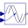
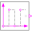

Duration |
| Real |
Quantity: Time Unit: s |
|---|
|  |
Modelica.Blocks.Nonlinear Delay block with variable DelayTime |
|  |
Modelica.Clocked.BooleanSignals.TimeBasedSources Generate pulse signal of type Boolean |